Now that you know a lot about how canvas works, lets explore what it's actually good for and some useful libraries.
现在你学到了很多关于canvas如何工作的原理，让我们探索一下它实际上有什么用途，还有一些有用的库。
图表
RGraph 是一款对个人免费使用的canvas图表库。包括很多不同的图表类型。
www.rgraph.net
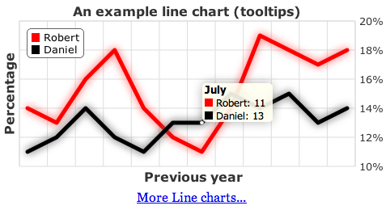
ZingChart 是一款包含可视构造器的图表库。
它使用多种不同的输出格式，包括Canvas，也能处理大型数据集。
http://www.zingchart.com/
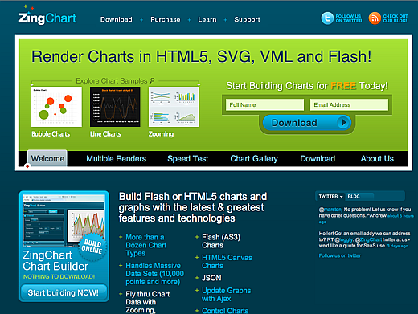
游戏引擎


Akihabara 游戏引擎
www.kesiev.com/akihabara
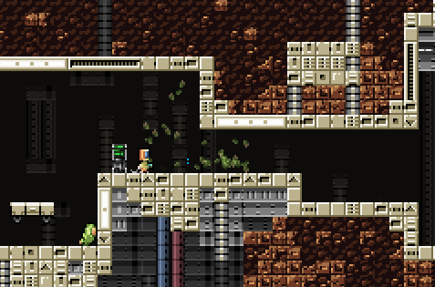
ImpactJS: 快速开发的商业游戏引擎
impactjs.com
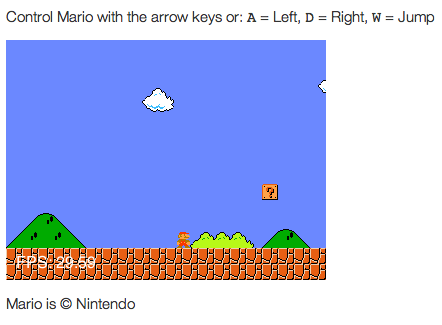
Cocos2D: javascript 编写的 Cocos iPhone SDK
cocos2d-javascript.org
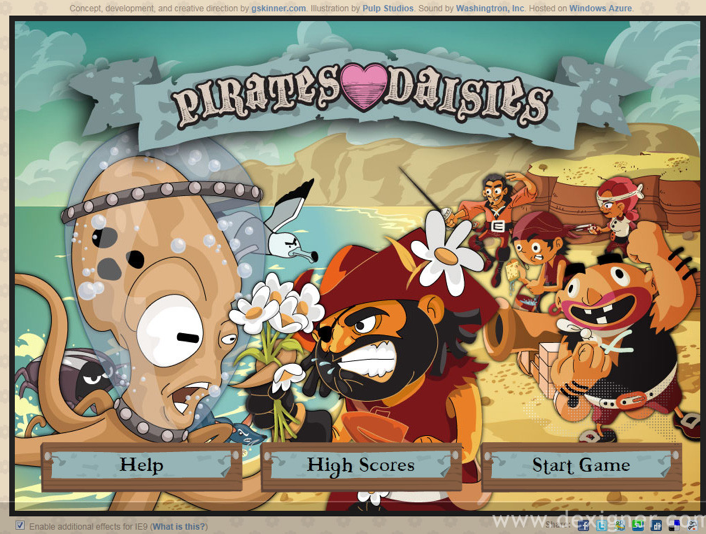
Pirates Love Daises 是完全使用canvas做的塔防游戏。
PiratesLoveDaises.com
绘图程序

Muro: Deviant Art's 基于Web的绘画程序。
deviantart.com

SketchPad: 另一具有非常优雅的用户界面的绘画程序。
mugtug.com/sketchpad/
自定义字体
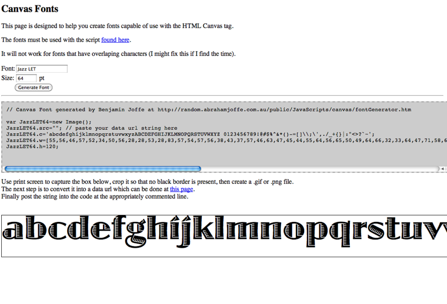
Ben Joffe's canvas 字体脚本。
将计算机上的字体转换成能被canvas画布渲染的图像。
这使得可以在没有安装实际字体的计算机上使用自定义字体。
benjoffe.com

canvas 画布丰富了儿童诗歌。文字被标记图像在透明的画布中。
Josh On Design
工具和库
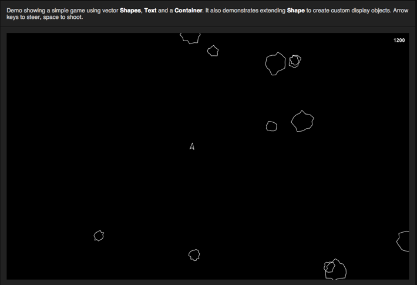
EaselJS: 一个松散的基于flash显示列表的图形库。
Easel JS

Java 图像处理库的 Javascirpt版。拥有良好的交互显示及艺术性。
Processing JS

Kapi: 一个关键帧js 库。
JeremycKahn.github.com/kapi/
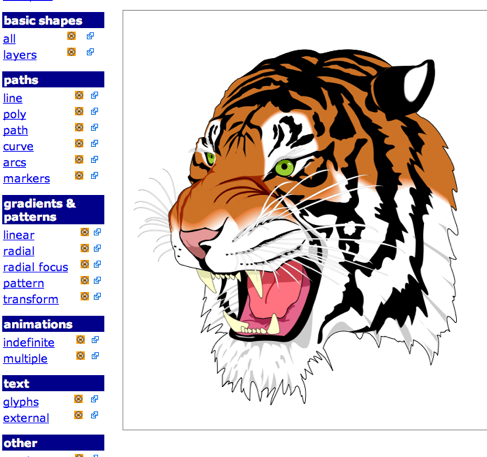
canvg: 一个 cavnas 构建的SVG渲染器。
code.google.com/p/canvg/
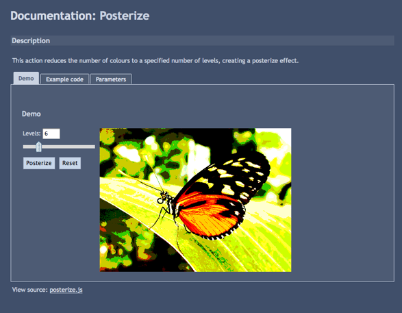
Pixastic 是一款图片编辑器和图像处理库。包含众多的 PS 滤镜效果。
Pixastic.com
可视化工具

Tumultco 出品的 Hype， 一款商业化输出直接的html5代码的绘图和动画工具。
tumultco.com/hype/
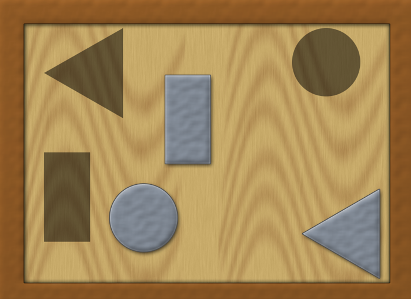
Amino : 开源 JavaScript 及 Java 三维表示库。
GoAmino.org
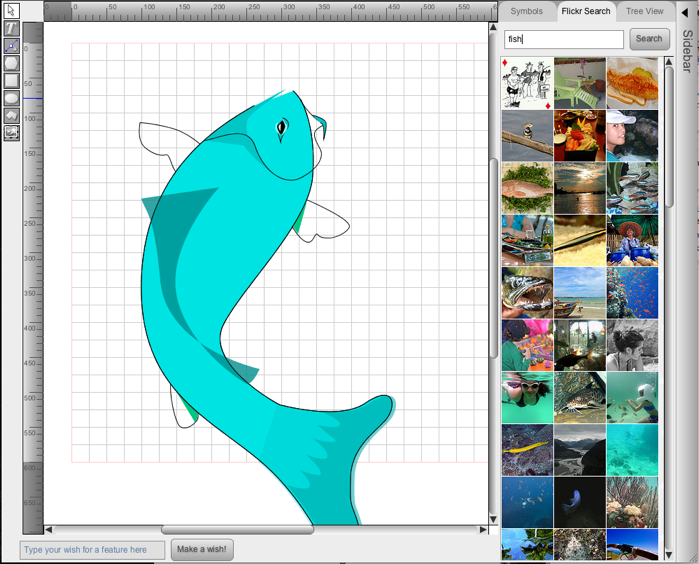
Leonardo Sketch: 输出canvas及Amino或其他格式代码的开源绘图工具。
LeonardoSketch.org